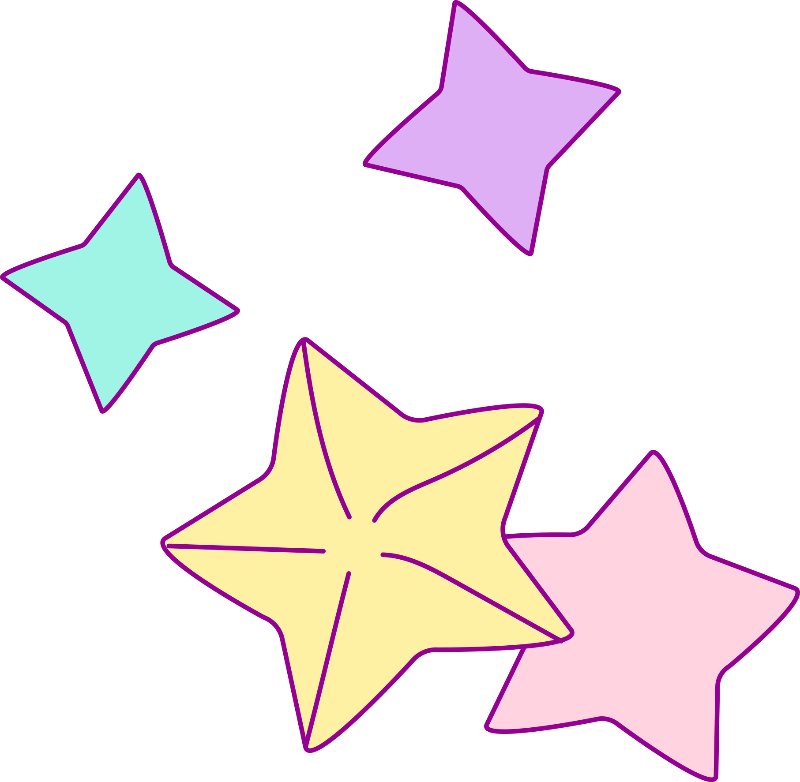

Hello and welcome to my online portfolio! My name is Isabella, but most people call me Bella. I am a junior at Fresno High School and participate in a special program called The Center for Advanced Research and Technology (CART) to explore future career options. You can learn about me, look at my qualifications, see some of my previous work, and contact me here. Thank you for visiting my website and viewing some of my works. :]
Welcome!

My Portfolio!
My Portfolio page features a collection of my programming, writing, and personal art projects. Specific examples of my work can be found here. These include web applications, writing, and art projects on which I've worked.
About Me!
You can learn more about me by visiting my About page. Awards I've received, hobbies, and my four-year plan are examples of such occasions.

Contact Me!
On the contact page, you can find links to my professional social media accounts as well as a form to send me an email.